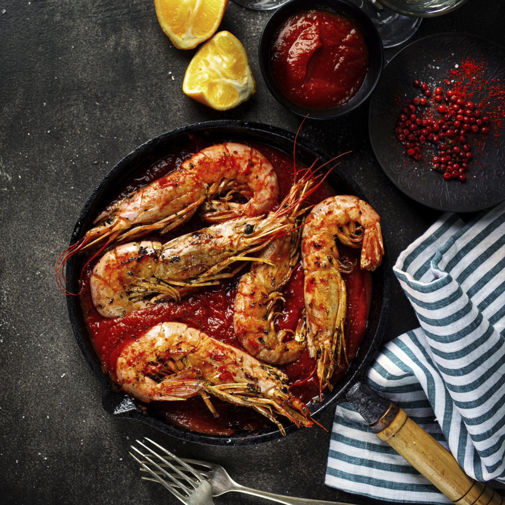
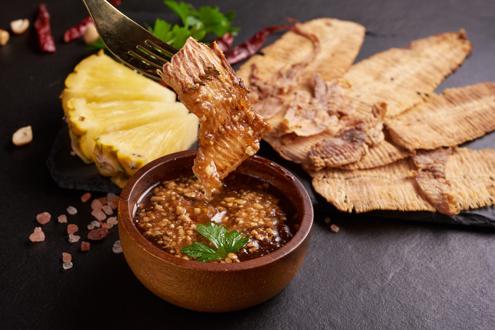

Bbq secrets

Shrimps
Ingredients:
Garlic butter:
Directions:
- Combine all marinade ingredients in a bowl and whisk. Allow shrimp to marinate at least 20 minutes.
- Preheat grill to medium heat.
- Thread shrimp on skewers and grill 2-3 minutes per side. Remove from skewers and place in a serving bowl.
- Drizzle with garlic butter and serve warm with lemon wedges if desired.

Squids
Ingredients:
Directions:
- Light one chimney full of charcoal. When all the charcoal is lit and covered with gray ash, pour out and spread the coals evenly over half of coal grate. Alternatively, set all the burners of a gas grill to high heat. Set cooking grate in place, cover grill and allow to preheat for 5 minutes. Clean and oil the grilling grate.
- Meanwhile, thoroughly pat squid dry with paper towels. In a medium bowl, toss squid with a drizzle of olive oil until lightly coated.
- Grill squid over hottest part of grill, turning, until browned on both sides. Transfer to a platter and season with salt and pepper. Drizzle fresh olive oil on top, garnish with parsley, and serve with lemon wedges.